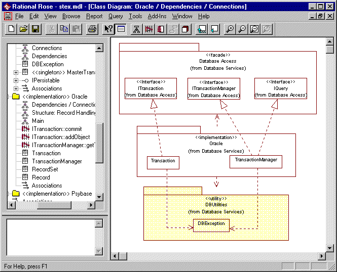

Standards: <<implementation>> Package
TopicsIntroduction
|
| Diagram | Purpose | Use | Comment |
| Main | A class diagram showing the structure and layering of the implementation. | Mandatory | This diagram provides an overview of the structure of the package. |
| Dependencies | A class diagram showing which other packages the implementation is dependent on. | Mandatory* | *Not required if the implementation is not dependent on any other packages. |
| Connections | A class diagram showing the dependencies between the classes in the implementation and the classes from other packages they are dependant upon. | Optional | For implementation packages
the Connections
diagram is just one of the possibly required Internal
Design class diagrams. All of
the connections may be shown on other more significant Internal
Design diagrams rendering the need for a
specific Connections
diagram obsolete. Can be combined with dependencies diagram for simple implementations (i.e. Diagram named Dependencies / Connections) |
| Interface Design | A set of interaction diagrams showing how the
operations of the realized interface's have been designed. Naming convention: Interface name :: operation name : optional description |
Optional | These diagrams provide a dynamic model of the
internals of the subsystem. They show how the implementation classes collaborate to
fulfill the operation specifications. These diagrams show internal behavior (rather than the external behavior shown on the usage diagrams of the facade). |
| Internal Design | Diagrams describing the internal design of the
subsystem. A package may have as many internal diagrams as the designer sees fit. General design diagrams should have meaningful names. Additional interaction diagrams may be required to show how the implementation classes interact internally where the starting point is one of the operations of the implementation class rather than an interface of the subsystem. These should follow the naming convention: class Name :: operation name : optional description. If the diagram is about the whole class and not a specific operation then the operation name should be omitted. |
Mandatory | There should be at least one internal design diagram showing the internal structure of the subsystem. These diagrams describe the structure of the design and how the structural elements collaborate to fulfill the subsystems responsibilities. |
| Welcome | A class diagram presenting the purpose of the implementation. | Optional | An explanatory diagram welcoming users to the package. |
Constraints 
All of the elements (classes and packages) owned by an implementation package are by default private / implementation.
Examples
The example below shows an <<implementation>> package with its Dependencies - Connections diagram displayed.
In the browser we can see a number of Interface Design (e.g. ITransaction::commit) and Internal Design (e.g. Structure: Record Handling) diagrams.
